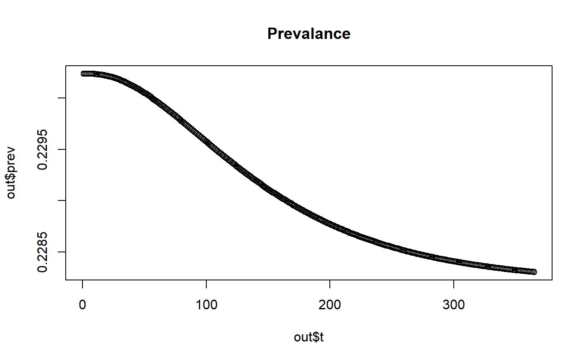
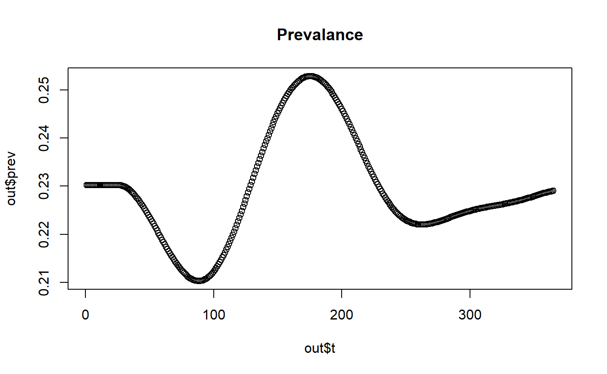
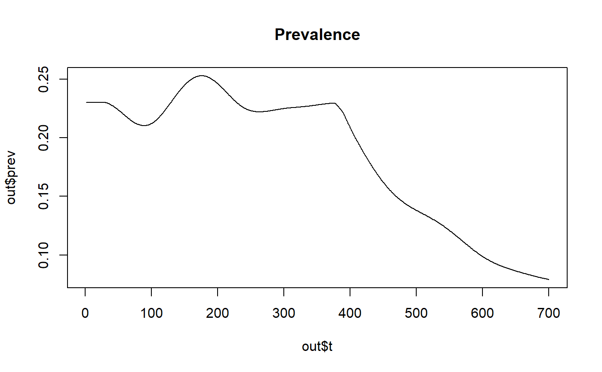
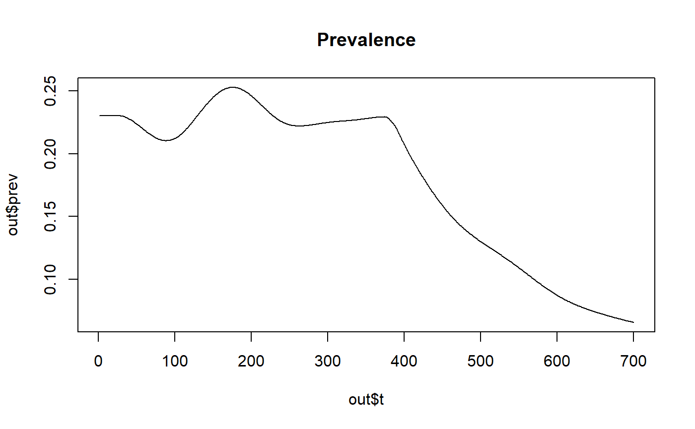

create_r_model.RmdWithin this package there are 2 ways to run the deterministic base model. This vignette focuses on the create_r_model function, which gives the user maximum control of the input parameters. The second,run_model function, solves the base model. For more infomation about the run_model function see this vignette.
The create_r_model function creates the odin deterministic malaria model in R. It has the following default arguments:
odin_model_path = system.file("extdata/odin_model.R", package = "hanojoel"
het_brackets = 5
age = c(0,0.25,0.5,0.75,1,1.25,1.5,1.75,2,3.5,5,7.5,10,15,20,30,40,50,60,70,80)
init_EIR = 10
init_ft = 0.4
country = NULL
admin2 = NULL
The simplest example of using the function to plot the malaria prevelance for a country with no seasonablity (found by setting both the country and admin2 to NULL) is:
library(hanojoel)
wh <- hanojoel:::create_r_model()
# generates model functions with initial state data
mod <- wh$generator(user= wh$state, use_dde = TRUE)
# Runs the model
mod_run <- mod$run(t = 1:365)
out <- mod$transform_variables(mod_run)
plot(out$t,out$prev, main= "Prevalance", ylim = c(0.22, 0.24), type='l')
It is posisble to change the default arguments for the create_r_model function as shown below:
# create a vector of age categories
init_age <- c(0,0.25,0.5,0.75,1,1.25,1.5,1.75,2,3.5,5,7.5,10,15,20,30,40,50,60,70,80)
# provide a value of the annual EIR for this model run
init_EIR <- 10
# provide a string for the admin 2 unit that you want to use the seasonality profile for
admin_str <- "Tororo"
# provide the length of time (in days) that you want to run the model for
time_period <- 365*1
# provide a value for the proportion of cases that are treated (referred to as ft in the paper)
prop_treated <- 0.4
# creates the odin model using the default odin model file
wh <- hanojoel:::create_r_model(odin_model_path = system.file("extdata/odin_model.R", package = "hanojoel"),
het_brackets = 5,
age = init_age,
init_EIR = init_EIR,
init_ft = prop_treated,
country = "Uganda",
admin2 = "Tororo")
# generates model functions with initial state data
mod <- wh$generator(user= wh$state, use_dde = TRUE)
# Runs the model
mod_run <- mod$run(t = 1:365)
out <- mod$transform_variables(mod_run)
plot(out$t,out$prev, main="Prevalence", type='l')
It is also possible to change the odin model by editing the odin_model_path. If the model is built within the package, such as odin_model_hrp2.R, change the path to:
odin_model_path = system.file("extdata/odin_model_hrp2.R", package = "hanojoel")If the odin model is only held locally, change the model path to:
odin_model_path = "extdata/odin_model_hrp2.R"It may be necessary to provide extra optional arguments to the odin model. For example if you run the odin_model_hrp2.R model without any extra arguments it produces an error:
# creates the odin model using the default odin model file
wh <- hanojoel:::create_r_model(odin_model_path = system.file("extdata/odin_model_hrp2.R",
package = "hanojoel"))
mod <- wh$generator(user= wh$state, use_dde = TRUE)
#> Error in self$set_user(user = user, unused_user_action = unused_user_action): Expected a value for 'hrp2_prop'This is because the required user argument hrp2_prop has not been provided. This is done as follows:
# creates the odin model using the default odin model file
wh <- hanojoel:::create_r_model(odin_model_path = system.file("extdata/odin_model_hrp2.R",
package = "hanojoel"),
hrp2_prop = 0.5)
mod <- wh$generator(user= wh$state, use_dde = TRUE)It is possible to change the seasonality parameters by specifying a named admin unit or both an admin unit and country to the hanojoel:::create_r_model() function. The latter is better when the admin name is common. Fuzzy matching is used to match the provided arguments with the data set provided in the package. The data set can be loaded into your workspace as follows:
seasonality_data <- load_file("admin_units_seasonal.rds")It is possible to vary the number of interventions considered in the model.
No interventions are included in the default settings of the model so num_int = 1.
Insecticide treated nets can be added to the default model as follows. Two intervention compartments are necessary. Net usage is set to 50% in this example and is turned on 365 days into the simulation:
wh <- hanojoel:::create_r_model(odin_model_path = system.file("extdata/odin_model.R", package = "hanojoel"),
het_brackets = 5,
age = init_age,
init_EIR = init_EIR,
init_ft = prop_treated,
country = "Uganda",
admin2 = "Tororo",
num_int = 2,
ITN_IRS_on = 365,
itn_cov = 0.5)
#> Requested: Tororo
#> Returned: Tororo, Uganda
# generates model functions with initial state data
mod <- wh$generator(user= wh$state, use_dde = TRUE)
# Runs the model
mod_run <- mod$run(t = 1:700)
out <- mod$transform_variables(mod_run)
plot(out$t,out$prev, main="Prevalence", type='l')
Indoor residual spraying (IRS) can be added to default model as follows. It requires four intervention compartments. Net usage is set to 50% in this example, IRS usage is 25% and both are turned on 365 days into the simulation:
wh <- hanojoel:::create_r_model(odin_model_path = system.file("extdata/odin_model.R", package = "hanojoel"),
het_brackets = 5,
age = init_age,
init_EIR = init_EIR,
init_ft = prop_treated,
country = "Uganda",
admin2 = "Tororo",
num_int = 4,
ITN_IRS_on = 365,
itn_cov = 0.5,
irs_cov = 0.25)
# generates model functions with initial state data
mod <- wh$generator(user= wh$state, use_dde = TRUE)
# Runs the model
mod_run <- mod$run(t = 1:700)
out <- mod$transform_variables(mod_run)
plot(out$t,out$prev, main="Prevalence", type='l')
Other interventions can be added in new model files specified with the odin_model_path variable. Any changes to the equilibrium solution should be made between the hanojoel:::create_r_model() and wh$generator() function calls and not through edits to the equilibrium solution in the model.